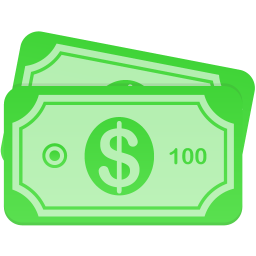
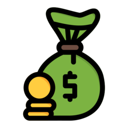
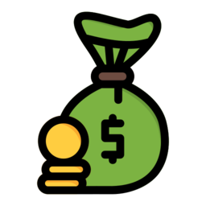

Es una práctica financiera fundamental que consiste en reservar una parte de los ingresos para utilizarla en el futuro. Es una herramienta poderosa que permite acumular recursos y hacer frente a necesidades y metas financieras a largo plazo.
El ahorro es el primer paso para tener una buena salud financiera. Y mejorar tu salud financiera, va más allá del dinero: va de la libertad de decidir cosas como cuánto tiempo paso con mis personas favoritas, a qué lugares quiero viajar o qué trabajo es el que más ilusión me hace.
 

Tener una buena salud financiera te permite:
-Pasar más tiempo con las personas que te importan
-Cambiar de trabajo cuando lo necesites
-Dormir tranquilo
-Viajar más
-Planificar mejor tu jubilación
-Comprar mejor
-Evitar estafas
-Combatir la inflación
Para lograr una buena salud financiera es importante dominar el arte de las finanzas personales.
A veces una pequeña inversión puede cambiar tu vida para siempre, por eso te recomiendo aprender educación financiera, lo que te ayudará a conseguir una salud financiera de hierro.
Para ello, en Economipedia hemos creado un programa de educación financiera para que de la mano de nuestros expertos aprendas a utilizar el poder de las finanzas para conseguir la tranquilidad financiera y construir tu riqueza.
1-Establecer metas claras:
Define objetivos financieros específicos y
realistas. Establecer metas claras te dará motivación y
te ayudará a mantener el enfoque en el ahorro.
2- Presupuestar:
Elabora un presupuesto para tener un panorama claro de tus ingresos y gastos.
Identifica áreas en las que puedas reducir gastos y destinar ese dinero al ahorro.
3- Automatizar el ahorro:
Configura transferencias automáticas para que una parte de tus ingresos
se destine directamente a una cuenta de ahorros.
Esto te ayudará a ser consistente en tu hábito de ahorro.
4- Reducir deudas:
Destina parte de tus ahorros para pagar deudas. Reducir tus deudas te permitirá
ahorrar más a largo plazo,
ya que no tendrás que destinar tanto dinero al pago de intereses.
5- Ahorrar antes de gastar:
Haz del ahorro una prioridad y
reserva una parte de tus ingresos tan pronto como los recibas,
antes de gastar en otros gastos o deseos.
6- Evaluar y reducir gastos innecesarios:
Revisa tus gastos y elimina aquellos que no sean realmente
necesarios.
Pequeños ahorros en gastos cotidianos pueden sumar una cantidad significativa a lo largo del tiempo.
7- Buscar rendimiento:
Considera invertir tus ahorros en instrumentos financieros que ofrezcan un
rendimiento adecuado. Evalúa opciones como cuentas de ahorro con intereses,
certificados de depósito o fondos de inversión,
dependiendo de tus objetivos y tolerancia al riesgo.
8- Mantener la disciplina:
El ahorro requiere disciplina y constancia.
Mantén el compromiso con tus metas financieras y
evita tentaciones de gastos innecesarios.
Recuerda que el ahorro es un proceso gradual y requiere paciencia y disciplina. Iniciar con pequeñas cantidades y aumentar progresivamente el monto de ahorro es un buen enfoque. Cada pequeño paso cuenta y te acercará a la seguridad financiera y el logro de tus metas.
No consumir en el presente supone un coste de oportunidad y por lo tanto, se está asumiendo cierto riesgo. Puede suceder, por ejemplo, que el producto que el individuo quería comprar con sus ahorros luego se agote en el mercado.
Otro punto a resaltar es que en muchos casos las familias no pueden llegar a fin de mes, es decir, gastan todos sus ingresos. Debemos tomar en cuenta que influye el elemento cultural. Así, existen países con orientación al ahorro como Japón, y otras naciones más capitalistas con mayor tendencia al consumo como EE.UU.
El ahorro puede mantenerse en dinero en efectivo pero también puede guardarse en otros activos que mantengan su valor a lo largo del tiempo y amortigüen el impacto de la inflación. Entre esos activos podemos destacar el oro, los depósitos bancarios y las letras del tesoro, o fondos de inversión que invierten en estos activos, como los fondos monetarios o fondos de inversión de renta fija de gobiernos de corto plazo. Son lo que se conoce como equivalentes de efectivo.
Muchas entidades financieras ofrecen activos de ahorro a largo plazo asociados a renta fija y a renta variable como los planes de pensiones o planes de jubilación. Estos son programas de ahorro periódico, algunos de ellos con ventajas fiscales que incentivan su contratación.